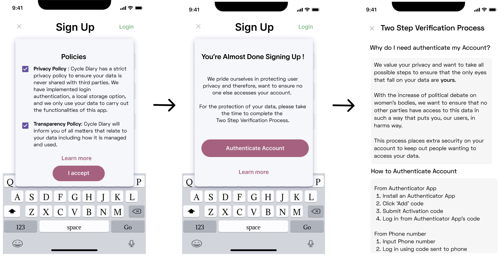
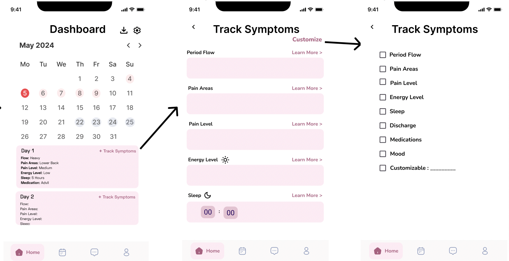
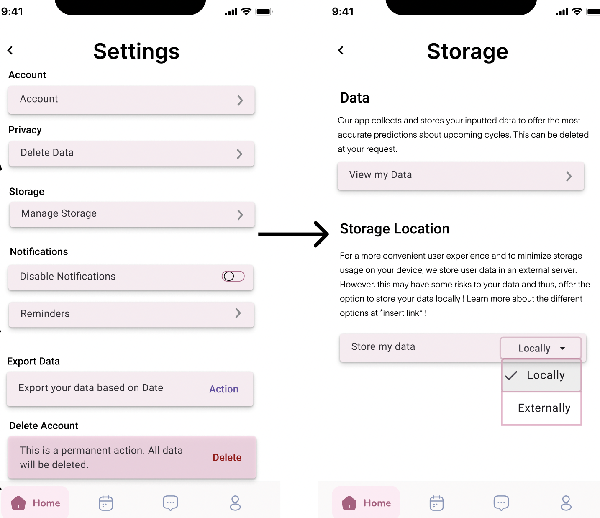

<!DOCTYPE html>
<html lang="en"></html>
<html>
  <head>
    <title>Sandra Sandoval Portfolio</title>
    <link rel="stylesheet" href="styles.css" />
    <link rel="stylesheet" href="redesign.css" />
    <link rel="stylesheet" href="iterative.css" />
    <link rel="stylesheet" href="ethical.css" />
  </head>
  <header>
    <div id="Title">
      <h1>Sandra Sandoval</h1>
    </div>
    <div id="header-container">
      <a href="index.html"><h2>Home</h2></a>
      <a href="assets/Sandra_s_Resume (1) (1).pdf"><h2>Resume</h2></a>
    </div>
  </header>

  <body>
    <div class="main-body">
      <div class="menu">
        <ul>
          <li><a href="#Overview" , id="menu-item">Overview</a></li>
          <li><a href="#impacts" , id="menu-item">Social Impacts</a></li>
          <li><a href="#interviews" , id="menu-item">User Interviews</a></li>
          <li><a href="#design" , id="menu-item">Design Choices</a></li>
          <li><a href="#mydesign" , id="menu-item">My Design</a></li>
        </ul>
      </div>
      <div class="body-content">
        <h1 id="Project-title">
          Ethical Design of <i>Period Tracking Apps</i>
        </h1>
        <div class="section" , id="overview">
          <div class="subsection" , id="redesign-subsection">
            <p>
              <b>Overview</b>
              <br />
              <br />
              When looking at current Period Tracking applications, it is clear
              that many have similar features aiming at giving their users a
              better understanding of their menstrual health. Over the past few
              years, however, users have become more concern with how their
              usage of these apps could be used against them.
              <br />This pushed me to consider common features' implications and
              design a period tracking app that accounts and mitigates them. I
              will develop a lo-fi mockup of a period tracking app that is user
              conscious and considers the ethical implications of its features.
              To do so, I will analyze overall social impacts, conduct a user
              interview, and weigh the pros and cons of each feature.
            </p>
          </div>
        </div>
        <!-- <div class="section" , id="problem">
          <div class="subsection" , id="redesign-subsection">
            <p>
              <b>Problem</b>
            </p>
          </div>
        </div> -->
        <div class="section" , id="impacts">
          <div class="subsection" , id="redesign-subsection">
            <p>
              <b>Social Impacts</b>
              <br />
              <br />
              To be able to design a user-conscious period app, I must first
              discuss and analyze the social impacts that come with their common
              features. Specifically, I want to discuss the following issues to
              address and mitigate them in my design.
            </p>
          </div>
          <div id="box-container">
            <div class="box" , id="feature">
              <p>User Autonomy</p>
            </div>
            <div class="box" , id="feature">
              <p>User Privacy</p>
            </div>

            <div class="box" , id="feature">
              <p>User Empowerment</p>
            </div>
          </div>
          <div class="subsection" , id="iterative-subsection">
            <p>
              <b id="sub-label">User Privacy</b>
              <br />
              The sensitive medical data that period tracker apps collect is
              very sensitive as it can be used to infer about when a user is
              pregnant, has had a miscariage, or abortion. Thus, when user
              privacy is violated, their human right to respect and dignity is
              violated.
              <br />
              Rather, they are stripped of their right to make their own
              decision about who has access to this data or not.
            </p>
          </div>
          <div class="subsection" , id="iterative-subsection">
            <p>
              <b id="sub-label">User Autonomy</b>
              <br />
              When a user signs up for a period-tracking app, they are entering
              a contract with the app in which the app promises to act only
              according to outlined policies. Therefore, when an app
              purposefully violates these policies, they are violating their
              consent and autonomy as users did not agree to use the app with
              those terms.
              <br />
              <br />
              Further, when a user's data is exposed or shared without their
              consent, they are exposed to the possibility of discrimination,
              commercial exploitation, and even legal persecution.
              <br />
              When a users' data is used against them by legal authorities, the
              legal authorities have the ability to not only surveil their
              bodies, but govern them also. In that sense, they lose autonomy as
              they no longer posesses the power to dictate their fate.
            </p>
          </div>
          <div class="subsection" id="iterative-subsection">
            <p>
              <b id="sub-label">User Empowerment</b>
              <br />
              User Empowerment is one of the most important social impacts of
              period tracking apps as these apps are both able to promote user
              empowermeny by providing its users with the necessary tools to
              understand their menstrual health and make informed decisions
              about their health or violate user empowerment by promoting
              paternalistic agendas that influence the way users perceive their
              health and how they interact with certain aspects of their
              menstrual cycle.
            </p>
          </div>
        </div>
        <div class="section" , id="interviews">
          <div class="subsection" , id="iterative-subsection">
            <p>
              <b>User Interviews</b>
              <br />
              <br />
              Though my analysis of social impacts helped me gain a better
              understanding of the end goal of my design, I sought out a
              first-hand experience from a frequent user of period apps to gain
              a better understanding of how exactly certain features violate
              users' autonomy and hinder empowerment.
              <br />
              <br />

              To guage a better understanding of how period applications'
              features affect individuals in regards to their understanding of
              their menstrual health, perceptions about symptoms, and their
              interactions with certain features, I decided to interview a
              frequent user of a period tracking app.
              <br />
              <br />
              Crystal Mejia is a 21-year-old female who frequently uses the
              period app, Clue. Mejia shared that prior to Flo's privacy scandal
              in which the app was found to be sharing user data to third
              parties, she was a frequent user of Flo.

              <br />
              <br />
              Mejia shared that while she finds period trackers to be very
              useful and essential to tracking her cycle and monitoring her
              symptoms, she acknowledges that some features have often times
              made her feel uncomfortable and 'pressured'.
              <br />
              <br />
              In particular, she stated that the emphasis on fertility tracking
              and pregnancies that is showcased in Flo's interface have made her
            </p>
            <div class="img-card">
              <!-- <h3>Crystal Mejia</h3> -->
              
            </div>
          </div>
        </div>
        <div class="section" , id="design">
          <div class="subsection" , id="iterative-subsection">
            <p>
              <b>Design Choices</b>
              <br />
              <br />
              Taking the previously discussed social impacts of period trackers
              and Mejia's experiences into account, I wanted to gear the
              features in my design into mitigating them as best as possible. In
              such, my design's target users are all people that have menstrual
              cycles and want a simple way to track it. Further, my design does
              not explicitly target people with concerns about pregnancy and
              fertility as one design desicion I made was to exclude the
              collection of pregnancy-related data.
              <!-- <br />
              <br /> -->
            </p>
          </div>
          <h3>Empowerment</h3>
          <div class="subsection" , id="iterative-subsection">
            <p>
              In my analysis, I was particular drawn to the nudges that period
              apps give users. This is because they oftentimes influence their
              perspective and behavior, hindering their autonomy and
              empowerment. Therefore, some of the features that I have decided
              to implement in my design to mitigate the issue of paternalistic
              agendas include
            </p>
          </div>
          <div id="box-container">
            <div class="box" , id="feature">
              <p>Menstrual Education Section</p>
            </div>
            <div class="box" , id="feature">
              <p>Customizable Notifications</p>
            </div>
            <div class="box" , id="feature">
              <p>Customizable Symptom Tracking</p>
            </div>
          </div>

          <h3>Privacy</h3>
          <div class="subsection" , id="iterative-subsection">
            <p>
              Further, privacy is an especially important aspect to consider as
              it has many dangerous implications. Thus, these privacy features
              aim at securing user accounts, strip user data from any
              identifiable information, and provide a more secure storage
              method.
            </p>
          </div>
          <div id="box-container">
            <div class="box" , id="feature">
              <p>Login Authetication</p>
            </div>
            <div class="box" , id="feature">
              <p>Anonymous Mode</p>
            </div>
            <div class="box" , id="feature">
              <p>Local Storage Option</p>
            </div>
          </div>

          <h3>Autonomy</h3>
          <div class="subsection" , id="iterative-subsection">
            <p>
              In regards to protecting users' autonomy, I wanted to design the
              app in such a way that handed over most of the power to the user
              such that they are fully in control in how to manage their data,
              which data is stored and collected, amd when it is deleted.
              Further, I believe it was especially important to be transparent
              with the users to ensure informed consent that does not feel
              deceive.
            </p>
          </div>
          <div id="box-container">
            <div class="box" , id="feature">
              <p>Policy Transparency</p>
            </div>
            <div class="box" , id="feature">
              <p>Customizable Settings</p>
            </div>
            <div class="box" , id="feature">
              <p>Customizable Delete Feature</p>
            </div>
            <div class="box" , id="feature">
              <p>Export Data</p>
            </div>
          </div>
        </div>
        <div class="section" , id="my-design">
          <div class="subsection" , id="redesign-subsection">
            <p>
              <b>My Design</b>
              <br />
              <br />
              Considering all design choices, including the desired features to
              incorporate, I chose to develop a lo-fi wireframe showcasing this.
              <br />
              <br />
              In particular, the lo-fi wireframe incorporates a few
              commonly-seen period tracking features such as display of
              graphical data and predictions on next period. However, it also
              includes features that aimed at mitigating privacy, autonomy, and
              pernalistic concerns. This can be seen below.
              <br />
              <br />
              The full flow can be accessed through
              <a
                href="https://www.figma.com/design/Jp3WZDZpk9ZJuo45EYATLF/CSCI-1952B-FInal-Project?m=auto&t=NS6B0B1Fz44BYe2J-6"
                >Figma</a
              >
            </p>
          </div>
          <div class="sketch-container">
            <div class="img-card">
              <h3>Promoting Informed User Consent & Transparency</h3>
              <p id="img-p">
                In short, the concise, yet informative policy statement before a
                user can sign up ains at ensuring that a user understands the
                terms of their agreement such that they are able to make a smart
                and informed decision choices about whether they want to use the
                app or not, Through checked boxes, my design ensures that users
                are forced to look over the policies.
              </p>
              
            </div>
            <div class="img-card">
              <h3>Promoting User Empowerment and Autonomy</h3>
              <p id="img-p">
                By allowing users to dictate which symptoms are visible, they
                have the power to dictate the emphasis and importance of certain
                symptoms. In other words by giving users this control, the app
                is not able make assumptoms about a women's needs and thus,
                reduce the possibility that they push certain agendas onto the
                user..
              </p>
              
            </div>
            <div class="img-card">
              <h3>
                Mitigating Privacy Concerns and Promoting User Empowerment
              </h3>
              <p id="sub-p">
                In keeping with the idea of user empowerment and privacy, the
                local storage is one of two different storage options that a
                user can select. This, again, gives users more power to govern
                their data. Further, it promotes security for user data by
                allowing the user to dictate whether their information will
                transmitted to an external server.
              </p>
              
            </div>
          </div>
        </div>
        <div class="section" , id="conclusion">
          <div class="subsection" , id="redesign-subsection">
            <p>
              <b>Conclusion</b>
              <br />
              <br />
              From conducting a user interview and analyzing the implications of
              current features found in period apps, I have considered many
              tradeoffs to ensure the safety and protection of users. Though
              some of these tradeoffs let to excluding certain helpful features
              such as personalized insights for a user, these tradoffs were
              worth it as it helps further promote ethical digital practices
              that account for user experiences.
            </p>
          </div>
        </div>
      </div>
    </div>
  </body>
</html>
